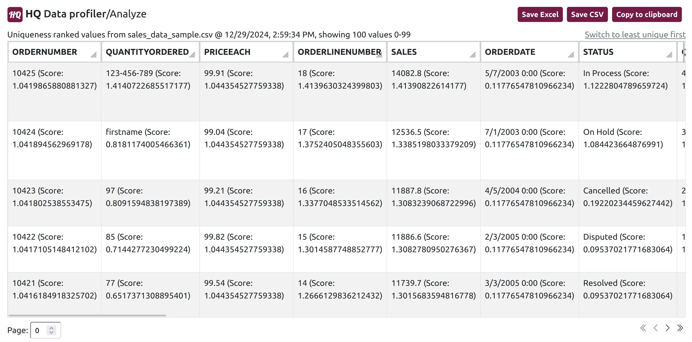
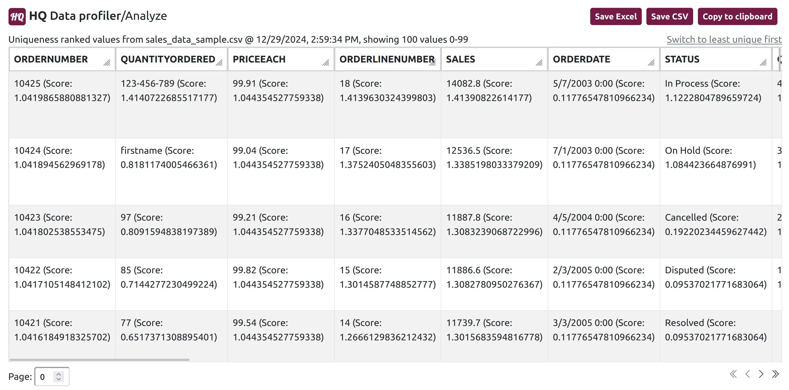

In today’s data-driven world, the accuracy, consistency, and completeness of your data can make or break the success of a business. Whether you're a data analyst, data engineer, or developer, ensuring data quality is an essential step. However, with large datasets with varying structures and formats becoming the norm, analyzing data quality can be daunting. That’s where HQ Data Profiler stands out.
With its simple yet powerful interface, HQ Data Profiler transforms the data quality analysis process. After just a few clicks, outlier values in data can be quickly and easily identified in the tool's easy-to-use analyze view.

Improved Data Cleaning And Validation: Anomaly detection insights can be used to refine data cleaning rules and transformations, ensuring cleaner and more reliable data. Identified anomalies can also be used to create data validation rules within data pipelines, ensuring that only high-quality data is processed and loaded into target systems.
Root Cause Analysis: The anomaly detection view provides valuable insights into the characteristics and distribution of data within each field. This information is crucial for understanding data quality and developing appropriate data integration strategies. By identifying anomalies, you can investigate the root cause of data quality issues, such as data entry errors, system glitches, or upstream data source problems.
Streamlined Integrations Development: The insights from anomaly detection can be used to optimize data transformation logic, and can help with identifying and addressing potential issues upfront.
Improved Data Governance: The anomaly detection view can be used to establish baseline data quality metrics and monitor data quality over time. This helps ensure that data quality remains consistent and meets business requirements.
Get started now using the data analysis capabilities of HQ Data Profiler to improve data quality, streamline data integration processes, and ensure the reliability of your data pipelines.
HQ Data Profiler Output:
Once your data is analyzed, the analysis view displays each unique value for each field (a.k.a. column). Values are displayed in order of their rank (the ML calculated probability of being an outlier for their field):
Why Use HQ Data Profiler's Data Analysis Capabilities:
Early Anomaly Detection: By identifying potential anomalies early on, you can proactively address data quality issues before they propagate downstream. This prevents costly errors and delays in downstream processes, and minimizes the impact of bad data on data warehouses, data lakes, and analytical systems.Improved Data Cleaning And Validation: Anomaly detection insights can be used to refine data cleaning rules and transformations, ensuring cleaner and more reliable data. Identified anomalies can also be used to create data validation rules within data pipelines, ensuring that only high-quality data is processed and loaded into target systems.
Root Cause Analysis: The anomaly detection view provides valuable insights into the characteristics and distribution of data within each field. This information is crucial for understanding data quality and developing appropriate data integration strategies. By identifying anomalies, you can investigate the root cause of data quality issues, such as data entry errors, system glitches, or upstream data source problems.
Streamlined Integrations Development: The insights from anomaly detection can be used to optimize data transformation logic, and can help with identifying and addressing potential issues upfront.
Improved Data Governance: The anomaly detection view can be used to establish baseline data quality metrics and monitor data quality over time. This helps ensure that data quality remains consistent and meets business requirements.
Get started now using the data analysis capabilities of HQ Data Profiler to improve data quality, streamline data integration processes, and ensure the reliability of your data pipelines.